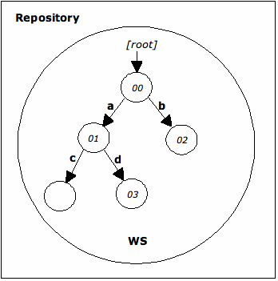

A repository with only a single workspace consists of a single tree of nodes and properties. The example at the beginning of this section (4 The Repository Model) describes a single workspace repository.
Since a given workspace contains at most one node with a given UUID, in this case, there is at most one node with a given UUID in the repository as a whole.
The following diagram depicts a single workspace repository:

The small circles represent nodes. The arrows point from parent to child and are labeled with the name of the child. The name of the root node is actually the empty string though, for clarity, it is indicated here with the string “[root]”. The numbers within the nodes represent the UUIDs of the nodes. For example, the UUID of the root node / is 00 and the UUID of /a/d is 03. The node /a/c is not referenceable and therefore does not have a UUID.